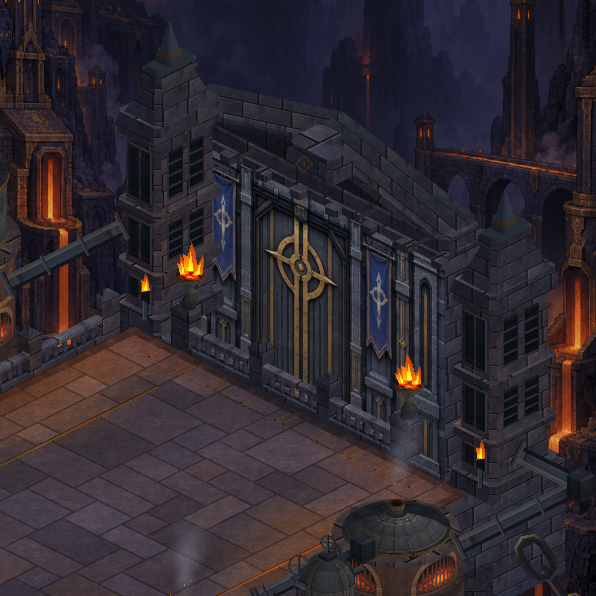

Actual Unity captures with the same camera. Rounded pressure mains, sleeve collars and valve hubs share the existing iron material. Gameplay and camera unchanged.

18 region renderers; 80,776 vertices (+1,488). This is a local readability revision, not completion of the reference scene.